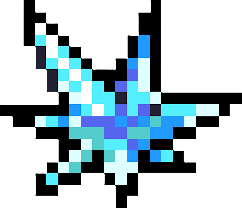

24 ч.
4 шт.
4
Иммунитет к огню и взрывам
24 ч.
3 шт.
3
Иммунитет к яду и токсинам
24 ч.
4 шт.
4
Увеличение макс. здоровья
24 ч.
4 шт.
4
+288 Самоцветов (Каждый день)
24 ч.
1 шт.
3
Оружие ближнего/дальнего боя "Бамбук"
24 ч.
1 шт.
3
Оружие пистолет "Морковь"
24 ч.
3 шт.
3
Питомец-помощник на один забег
24 ч.
3 шт.
3
Иммунитет к шипам и травмам от тарана
24 ч.
2 шт.
3
Увеличение шанса критического удара
24 ч.
2 шт.
3
Оружие ближнего боя "Титановый арум"
24 ч.
4 шт.
4
Бафф скидки у торговцев (50%)
24 ч.
2 шт.
3
Разовая награда: +288 Самоцветов
24 ч.
2 шт.
3
Материалы: 3 Детали (Шестеренки)
24 ч.
2 шт.
3
Материалы: 4 Единицы Железа
24 ч.
2 шт.
3
Оружие ближнего боя "Зеленый лук"
24 ч.
3 шт.
3
Материалы: 10 Единиц Древесины
24 ч.
3 шт.
3
Ускорение перезарядки навыка (25%)
24 ч.
2 шт.
3
Разовая награда: +4 Наемные монеты
Драконий фрукт
Внешний вид семени: Магматическое яйцо ярко-оранжевого цвета с черными чешуйками.
Взрослое дерево: Массивное пиксельное дерево с пылающей красно-желтой кроной.
Мандрагора
Внешний вид семени: Темно-фиолетовый корень, напоминающий силуэт человека.
Взрослое дерево: Невысокий куст, из центра которого распускается ядовитый бутон.
Гусеничный гриб
Внешний вид семени: Продолговатая оранжевая спора, похожая на вытянутый кокон.
Взрослое дерево: Массивный оранжевый гриб с сегментированной структурой.
Самоцветный куст
Внешний вид семени: Маленький сверкающий кристалл голубого цвета.
Взрослое дерево: Пышный куст, усыпанный крупными ограненными самоцветами.
Бамбук
Внешний вид куста: Тонкие зеленые тростинки, тянущиеся вверх.
Взрослое дерево: Крепкий полый стебель, готовый к срубу для получения оружия.
Морковь
Внешний вид куста: Пышная зеленая ботва на грядке.
Взрослое дерево: Созревшая крупная морковь, превращающаяся в пистолет.

Дурман
Внешний вид куста: Хищные лозы босса, шевелящиеся на грядке.
Взрослое дерево: Опасный цветок, дающий питомца-помощника на один забег.
Кактус
Внешний вид куста: Острый пустынный суккулент с небольшими отростками.
Взрослое дерево: Цветущий кактус, дающий игроку иммунитет к шипам и тарану.
Радужная трава
Внешний вид куста: Пучки травы, где каждый листик имеет свой оттенок.
Взрослое дерево: Яркая светящаяся трава, повышающая шанс критического удара.
Титановый арум
Внешний вид куста: Огромные темно-зеленые раскидистые листья.
Взрослое дерево: Гигантский трупный цветок, дающий уникальное оружие ближнего боя.
Цветок самоцветов
Внешний вид куста: Тонкий стебель с розовым бутоном в драгоценной крошке.
Взрослое дерево: Одноразовый цветок, дающий россыпь в +288 самоцветов при сборе.
Шестеренчатый цветок
Внешний вид куста: Жесткие зубчатые механические листья с металлическим лязгом.
Взрослое дерево: Стальная сердцевина, дающая игроку 3 детали для крафта.
Железное дерево
Внешний вид куста: Небольшое деревце с прямыми ветками стального цвета.
Взрослое дерево: Плотное стальное дерево, дающее 4 единицы железа в мастерской.
Зеленый лук
Внешний вид куста: Высокие сочные зеленые перья лука пучком из центра.
Взрослое дерево: Созревшее растение, используемое как одноименное оружие ближнего боя.
Дуб
Внешний вид куста: Крепкий деревянный росток с первыми резными листьями.
Взрослое дерево: Вековое массивное дерево. При срубе дает 10 единиц древесины.
Звездный лотос
Внешний вид куста: Плотный раскрывающийся бутон, плавающий на воде.
Взрослое дерево: Магический светящийся лотос. Ускоряет откат навыка на 25%.
Золотая лилия
Внешний вид куста: Изящные стебли с золотым отливом, раскрывающиеся вширь.
Взрослое дерево: Благородный золотой цветок. Дает +4 наемные монеты для текущего забега.
Золотой гриб
Внешний вид семени: Блестящая золотистая спора ретро-формы.
Взрослое дерево: Роскошный сияющий гриб из чистого пиксельного золота.